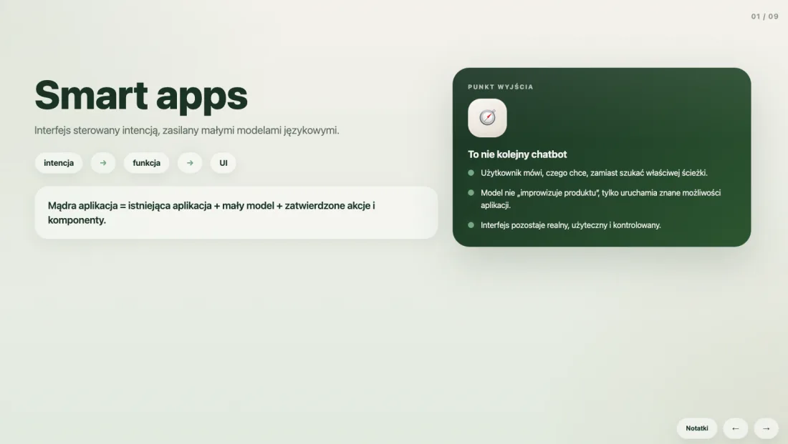
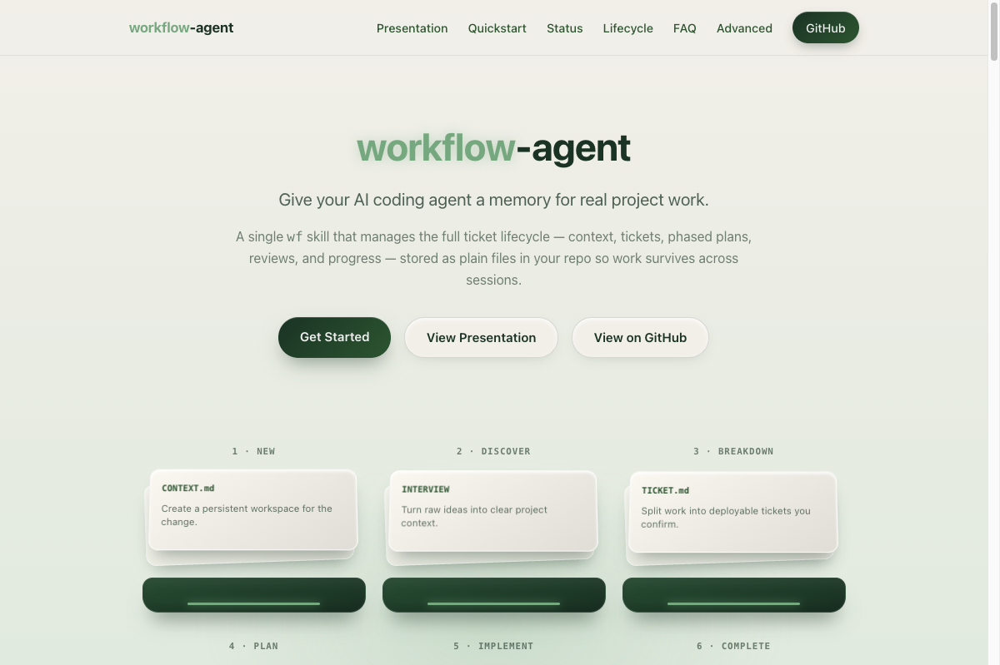

Senior software engineer
Product
engineer.
I’m Michał Zadarnowski, a front-end engineer based in Poland. Husband and father of four.
Explore my workSelected projects
Web application
Breathwork
A breathing trainer inspired by the Wim Hof method.
Open project

Desktop application
MindReel
A desktop app for logging tasks throughout the day.

Research
Smart Apps
Exploring how small language models can understand intent and perform defined actions.

Slide deck
Smart Apps slides
A slide-by-slide introduction to the Smart Apps research.

Agent skill
workflow-agent
A filesystem-based ticket lifecycle for AI coding agents.
Knowledge base